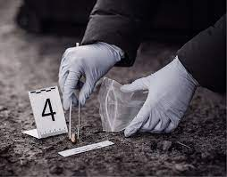

Escolaridad
-Licenciado en Criminalística y Criminología.
-Maestría en Investigación Criminal y Ciencias Forenses.
-Especialidad en Criminalística.
-Licenciado en Criminalística y Criminología.
-Maestría en Investigación Criminal y Ciencias Forenses.
-Especialidad en Criminalística.

-Criminalística
-Criminología

-Valuación de Bienes Inmuebles.
-Grafoscopia.
-Dactiloscopia.
-Fotografía.
-Vídeo.
-Balística.
-Identificación Vehícular.
-Criminología Corporativa
ASESORAMIENTO PERICIAL
ANÁLISIS DE CARPETA DE INVESTIGACIÓN
ANÁLISIS DE EXPEDIENTES
ELABORACIÓN DE DICTÁMENES PERICIALES
ELABORACIÓN DE INFORMES PERICIALES
ELABORACIÓN DE CUESTIONARIOS